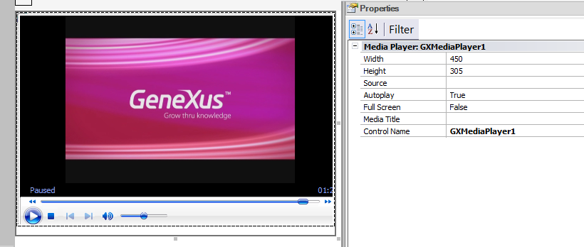

Different Multimedia sources such as audio, video, pdf in your Web Applications are a powerful tool for making your application more informative and more attractive. Video can be stored in your database, or you can use common online video sharing services. In this context, the GX Media Player Control will handle the different kinds of sources you could want to use. Using the controlGX Media Player is a GeneXus built-in control that is available in the toolbox. How to use the control:

Properties
The implementation of this control is based on the VIDEO HTML5 tag and uses the VideoJS library to use a Flash player when the VIDEO tag is not supported. Supported Sources The Source property supports the following sources:
However, the supported formats depend on the browser and operating system, see this link. AvailabilitySince GeneXus X Evolution 3 upgrade 8.
|
| Backlinks |
| Category:Common Controls |